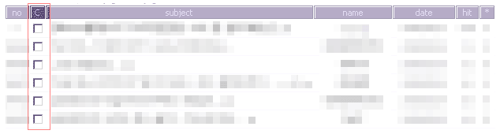
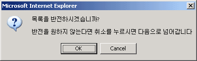
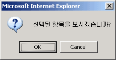

|
여러게시물 보기 1. 관리자모드에서 바구니 기능이 체크 되어있을때 각 목록에는 가 표시가 됩니다. 1. 이 기능은 한번에 여러개의 게시물을 볼수 있는 기능입니다.  1. 위와 같은 형태입니다. 1. 제일 위의 이미지 같은 경우 바구니나 기타 다른 모습으로 나타나 있을수 있습니다. 1. 위의 체크박스에서 원하는 게시물을 선택하시거나 바로 버튼을 누르시면 다음과 같은 1. 알림창이 뜹니다.  1. 위의 화면은 선택된, 또는 선택되지 않은 항목들을 반전 시키는 것에 대한 질문입니다. 1. 아무것도 선택하지 않은채 버튼을 눌르서 OK 를 누른다며 모두 선택한 효과가 나타납니다.  1. 반전/ 또는 반전하지 않음을 통해서 선택된 게시물이 있다면 위의 메뉴가 나타나며 1. OK를 누르면 선택된 게시물이 한 페이지에 모든 내용이 보이게 됩니다. 1. 게시물을 따로 따로 보고, 목록으로 이동하는 방법보다 편한 방법입니다. |